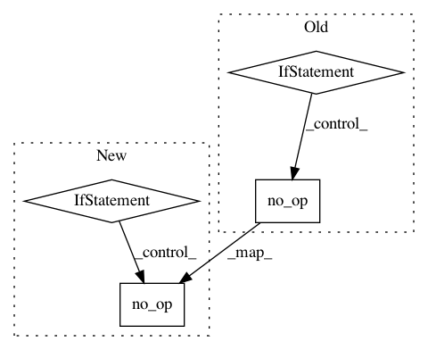

e71740e4775168f20dbcc5eded74adf5fd6eed9e,softlearning/algorithms/sac.py,SAC,__init__,#SAC#Any#Any#Any#Any#Any#Any#Any#Any#Any#Any#Any#Any#Any#Any#Any#Any#Any#Any#Any#Any#,23
Before Change
summary_dir = logger._snapshot_dir
self.summary_writer = tf.summary.FileWriter(
summary_dir, self._sess.graph)
self._summary_ops = [tf.summary.merge_all()
if self._tf_summaries
else tf.no_op()]
// Initialize all uninitialized variables. This prevents initializing
// pre-trained policy and qf and vf variables.
After Change
self._init_critic_update()
self._init_target_ops()
if self._tf_summaries:
// TODO(hartikainen): This should get the logdir some other way than
// from the rllab logger.
summary_dir = logger._snapshot_dir
self.summary_writer = tf.summary.FileWriter(
summary_dir, self._sess.graph)
self._summary_ops = [tf.summary.merge_all()]
else:
self._summary_ops = [tf.no_op()]
// Initialize all uninitialized variables. This prevents initializing
// pre-trained policy and qf and vf variables.
uninit_vars = []
for var in tf.global_variables():
try:
self._sess.run(var)
In pattern: SUPERPATTERN
Frequency: 3
Non-data size: 4
Instances
Project Name: rail-berkeley/softlearning
Commit Name: e71740e4775168f20dbcc5eded74adf5fd6eed9e
Time: 2018-08-27
Author: kristian.hartikainen@gmail.com
File Name: softlearning/algorithms/sac.py
Class Name: SAC
Method Name: __init__
Project Name: tensorflow/agents
Commit Name: 3b319b5315239d1ccd1afed99c8f8e7bbf226554
Time: 2018-12-21
Author: sguada@google.com
File Name: tf_agents/utils/common.py
Class Name:
Method Name: compute_returns
Project Name: tryolabs/luminoth
Commit Name: 4ec258a2261a943910a34be1b7d53a646f089367
Time: 2018-04-16
Author: joaquin.alori@gmail.com
File Name: luminoth/train.py
Class Name:
Method Name: run